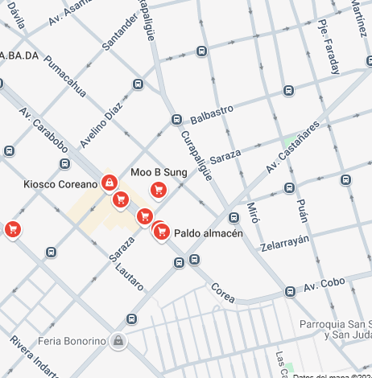
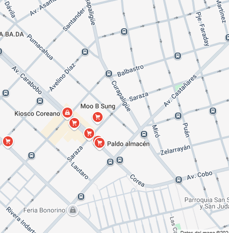

Entre telas y ropas al por mayor se esconde el Barrio Coreano. Con cada vez más supermercados, mayor oferta de productos y comidas coreanas es un lugar indispensable para cualquier cocinero curioso y audaz. Qué comprar, cómo usar y por qué vale la pena conocer una de las gastronomías más interesantes y en boga del mundo.
Muchos de los restoranes y bares se encuentran sobre el pasaje Ruperto Godoy, pero los supermercados se amontonan sobre la calle Morón, los dos más grandes, completos y fáciles para comprar para aquellos que no pertenecemos a la comunidad son: Hawai Market y Sambo Mart.
La mayoría de los productos que allí se venden nos son bien desconocidos, al menos para aquellos que no tenemos raíces coreanas. Sin embargo, es divertido, interesante y enriquecedor familiarizarse con ellos y empezar a incorporarlos a nuestra cocina. Para eso, primero que nada hay que saber qué son y para qué sirven. La cocina coreana es una gastronomía super atractiva y variada que se encuentra en plena expansión y que tenemos la suerte de poder disfrutar cada vez más en Buenos Aires.
Hay dos zonas donde se puede ir a comprar:
Una es la zona de los locales de ropa de flores,sobre la calle Morón y por otro lado los comercios originales que están por la calle Av. Carabobo
 
